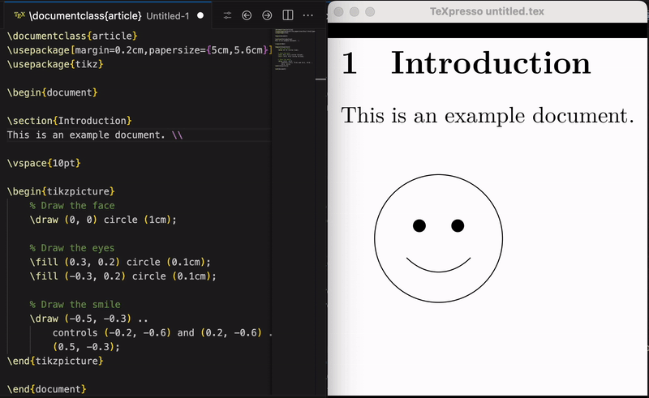

TeXpresso
Edit LaTeX with a live preview beside your source. The preview updates as you type, and you can jump between source and PDF in both directions with SyncTeX. It can be used alongside other LaTeX extensions such as LaTeX Workshop.
Install from the VS Code Marketplace Source code on GitHub Report an issue

What it does
- Live rendering. The preview updates immediately as you edit, without a manual recompile.
- Bidirectional SyncTeX. Jump from the cursor to the matching place in the preview, or Control/Command-click in the preview to jump to the source line.
- Multi-file projects. Files pulled in with
\inputare tracked and changes are passed on to the engine. - Theme matching. Optionally render the preview with your editor's color theme.
- Windows via WSL. The engine runs in the Windows Subsystem for Linux while the preview appears in VS Code on Windows.
How to use it
- Install the extension, and a TeX package provider such as TeX Live or Tectonic, on the machine where the extension runs. For Tectonic, select it in the setting
texpresso.packageProvider. - Open a LaTeX document in VS Code.
- Open the Command Palette and run TeXpresso: Start Document. The preview opens beside your source and updates as you edit.
The macOS and Linux packages include the TeXpresso engine. The universal package needs a separately installed engine. Leave texpresso.command empty to use the bundled engine, or set it to your own executable.
For projects with several files, add a % !TeX root = ../main.tex comment or run TeXpresso: Select Main Document; the choice is remembered per workspace folder.
Preview controls
The preview toolbar navigates pages, adjusts zoom and fit, pauses or restarts compilation and opens the compiler output. Pinch or Control/Command-scroll zooms. Hyperlinks in the document are clickable. The magnifier button (or M while the preview has focus) turns on a loupe. The status-bar entry opens controls for starting, stopping, restarting and pausing the preview, running extra compilation passes and opening logs. External Compile and Refresh runs an external build, for example to run a bibliography program.
Windows
Open your project in a WSL window with TeXpresso: Reopen Folder in WSL, install the extension in that window and install TeX Live or Tectonic in the Linux distribution. Alternatively, enable texpresso.useWSL from a local Windows window to use an engine installed in WSL.
Common settings
| Setting | Purpose |
|---|---|
texpresso.command | Use an external engine instead of the bundled one |
texpresso.previewLocation | Show the preview in the editor area or in a separate window |
texpresso.packageProvider | TeX Live (default) or Tectonic |
texpresso.includeDirectories | Extra directories for project inputs |
texpresso.autoRerun | Extra passes for references and the table of contents when editing pauses |
texpresso.syncTeXForwardOnSelection | Follow the source cursor in the preview |
texpresso.useEditorTheme | Use the editor's colors in the preview |
Troubleshooting
Run TeXpresso: Check Setup to inspect the selected engine and package provider. If compilation fails, open the TeXpresso and TeXpresso Log output channels, and check that the required LaTeX packages are installed where the extension runs (inside WSL if applicable).
Privacy, license and source
The extension runs locally, compiles your documents on your machine and sends no data to any server. Its own code is MIT licensed; the platform packages also contain native components under other licenses, listed in the third-party notices. The changelog lists changes between versions.